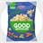

<style>
    /* 1. Super Header: Extra bold and distinct */
  h1 {
    font-weight: 900;
    text-align: center;
    font-size: 3rem;
    text-transform: uppercase;
    letter-spacing: -1px;
    line-height: 1.1;
    margin-bottom: 0.5em;
    color: #1a1a1a;
  }
  
  /* 2. Bold Header: Strong but standard */
  h2 {
    font-weight: 700;
    text-align: center;
    font-size: 2rem;
    color: #333;
  }
  h3 {
    font-weight: 700;
    text-align: center;
    font-size: 1rem;
    color: #333;
  }
  
  /* 3. Regular Header: Normal weight, optimized for clarity */
  h4 {
    font-weight: 400; /* Regular weight */
    font-size: 1.5rem;
    line-height: 1.4;
    color: #555;
    border-left: 4px solid #ececec; /* Adds a clear visual marker */
    padding-left: 15px;
  }

  .circle-image {
    width: 200px;         /* Set a specific width */
    height: 200px;        /* Set the same height to make it a square */
    border-radius: 50%;   /* This turns the square into a circle */
    object-fit: cover;    /* Ensures the image doesn't look stretched */
  }


  /* Center the table within its parent */
/* Container for responsiveness and card feel */
.table-container {
  max-width: 900px;
  margin: 2rem auto;
  padding: 1rem;
  background: #ffffff;
  border-radius: 12px;
  box-shadow: 0 10px 25px rgba(0, 0, 0, 0.05);
  overflow-x: auto; /* Scrollable on mobile */
  font-family: 'Inter', -apple-system, sans-serif;
}

.stats-table {
  width: 100%;
  border-collapse: collapse;
  text-align: left;
}

/* Header Styling */
.stats-table thead th {
  padding: 16px;
  background-color: #f8fafc;
  color: #64748b;
  font-weight: 600;
  font-size: 0.85rem;
  text-transform: uppercase;
  letter-spacing: 0.05em;
  border-bottom: 1px solid #e2e8f0;
}

/* Row Styling */
.stats-table tbody td {
  padding: 16px;
  border-bottom: 1px solid #f1f5f9;
  color: #334155;
  font-size: 0.95rem;
}

/* Hover effect for interactivity */
.stats-table tbody tr:hover {
  background-color: #f1f5f9;
  transition: background-color 0.2s ease;
}

/* Emphasizing specific stat values */
.stat-value {
  font-weight: 700;
  color: #1e293b;
}

/* Status Badges */
.badge {
  padding: 4px 10px;
  border-radius: 20px;
  font-size: 0.75rem;
  font-weight: 600;
}

.badge.success {
  background-color: #dcfce7;
  color: #15803d;
}

.badge.warning {
  background-color: #fef9c3;
  color: #a16207;
}

/* Last row shouldn't have a border */
.stats-table tbody tr:last-child td {
  border-bottom: none;
}
</style>

<head>
  <title>Portifolio - Dennis</title>
</head>
<boddy>
  <h1>over mij</h1>
  <div style="display: flex; justify-content: center;">
  
  </div>
  <h3>865@leerling.parcourstilburg.nl</h3>
  <h2>Dennis Heering</h2>
  <div class="table-container">
  <table class="stats-table">
    <tbody>
      <tr>
        <td class="stat-value">Momunteele opleiding</td>
        <td>Parcours</td>
        <td>Vmbo-Kader</td>
        <td>V3B</td>
        <td><span class="badge warning">Nu</span></td>
      </tr>
      <tr>
        <td class="stat-value">Doel Opleiding</td>
        <td>Currio</td>
        <td>MBO-3</td>
        <td>Software Developer</td>
        <td><span class="badge warning">In de wacht</span></td>
      </tr>
      <tr>
        <td>Solaris Branding</td>
        <td>Marketing</td>
        <td class="stat-value">-2%</td>
        <td><span class="badge warning">Paused</span></td>
      </tr>
    </tbody>
  </table>
</div>
</boddy>
